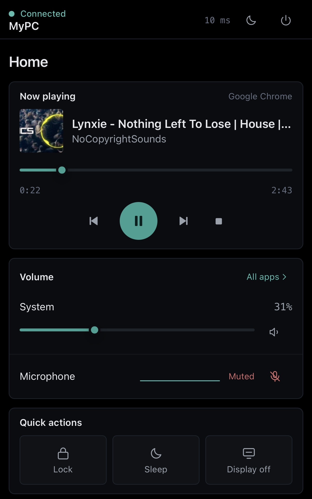

Volume, music, monitor inputs, brightness and power — from anywhere in the house. No account, no cloud, nothing leaves your Wi-Fi.
Get it from the Microsoft Store
Watch it work
Pairing the phone, then every control, on a real machine.
On the phone
Six screens from a real setup. Tap any of them to see it full size.
What you can do
HDMI to DisplayPort and back, and brightness with it — without reaching under the bezel for buttons nobody can ever find. The one no other phone remote does.
Turn one app down without touching the rest. Mute the microphone, or move the sound to a monitor's own output.
Play, pause, skip and scrub, with the track and its cover art — from Spotify, YouTube, a video file, or anything else that makes sound.
Build an activity once — drop the brightness, switch the monitor, mute the mic — and it becomes a single button.
Two buttons the size of your thumb, laid out for someone standing up. They send keystrokes to whatever is in front, so PowerPoint, Keynote, Google Slides and any PDF viewer all work.
Processor, memory, disk and network charted live, down to the load on each core. Useful on the day something is pegged and you are nowhere near the desk.
Lock, sleep, or turn the displays off. Shut down and restart need two taps, deliberately.
Push text to the PC clipboard, or open a link on the big screen. Works the other way too.
Send the PC to sleep in twenty minutes, or any length you pick.
Anything Remot changed, it can put back — the brightness, the input, the output device.
In practice
Setting it up
Nothing to configure. It picks its own port and opens the firewall for private networks only.
and tap the link that appears. Your phone needs to be on the same Wi-Fi as the PC.
Add it to your home screen and it behaves like any other app. It pairs once and remembers.
Privacy
There is no server in the middle and no account to make. The PC talks to your phone directly over your own Wi-Fi, and the app only opens the firewall for private networks — so it does nothing on café or airport Wi-Fi. Your phone pairs once by scanning the code; nothing else can connect without it.
Good to know
Installed from the Store, so Windows keeps it current. There is nothing to check and no version to watch for.
Windows marks most networks Public, which blocks other devices. Open Settings › Network & internet › Wi-Fi, click your network, and choose Private network. Remot detects this and offers to fix it.
Most desktop monitors support it, though some ship with it switched off — look for DDC/CI in the monitor's own menu. Laptop screens don't support it at all.
The dashboard is built to run on Chrome going back to around version 70.
Add or remove programs → Remot. It takes the firewall rule with it and asks before deleting your settings.
Each PC runs its own copy and pairs with your phone separately. There is no fleet view, and that is not what this is for.
Free, on the Microsoft Store. Windows 10 and 11.
Get it from the Microsoft Store{kind=link}
{kind=link}
{kind=link}
{kind=link}
{kind=link}
{kind=link}